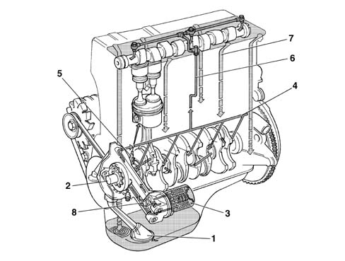
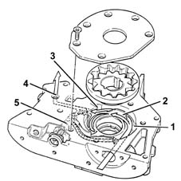
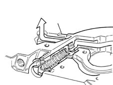
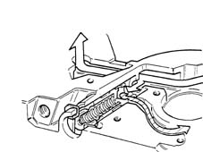

INTRODUCTION - ENGINE LUBRICATION
- Path
- Descriptions > 10 ENGINE > 1084 ENGINE LUBRICATION > INTRODUCTION - ENGINE LUBRICATION
- Kind
- system description
- Applies to
- engines: 1.4 8v; all production periods
- Interactive page
- https://sloeber94.github.io/elrnDB-fDbl/en/#/223000218
Applies to: engines: 1.4 8v; all production periods
ENGINE OIL SUPPLY CIRCUIT
VIEW OF ASSEMBLY
-

1, Suction head with filter mesh
2, Oil pump
3, Oil filter cartridge
4, Main longitudinal channel
5, Jets (piston skirt cooling)
6, Vertical channel (camshaft mounting lubrication)
7, Oil falling back into sump
8, Switch for engine oil pressure warning light
ENGINE OIL PUMP
The engine oil is drawn in by the sump by means of the vacuum created by the rotation of the gears on the crankshaft.
There is a vacuum from the partition (2) for the gears as far as the oil sump suction head.
The pressure develops starting from the partition (2) in all the engine supply ducts (4).
When the pressure exceeds 5 bar, the force exerted on the restricter valve (5) overcomes the reaction of the spring underneath and moves the valve until the connecting duct between the pressure chamber (3) and the low pressure chamber (1) opens.

1, Low pressure chamber
2, Partition
3, Pressure chamber
4, Oil supply duct
5, Oil pressure restricter valve
Engine oil pressure restricter valve closed operating position
-

Restricter valve short circuit operating position
-
